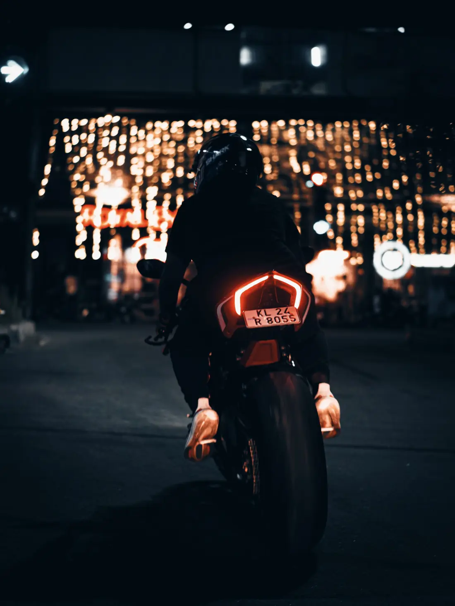
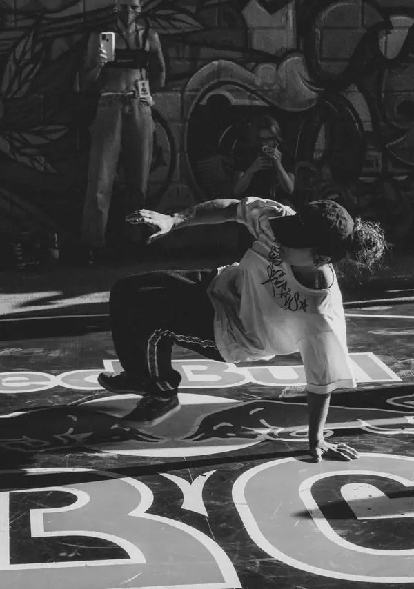
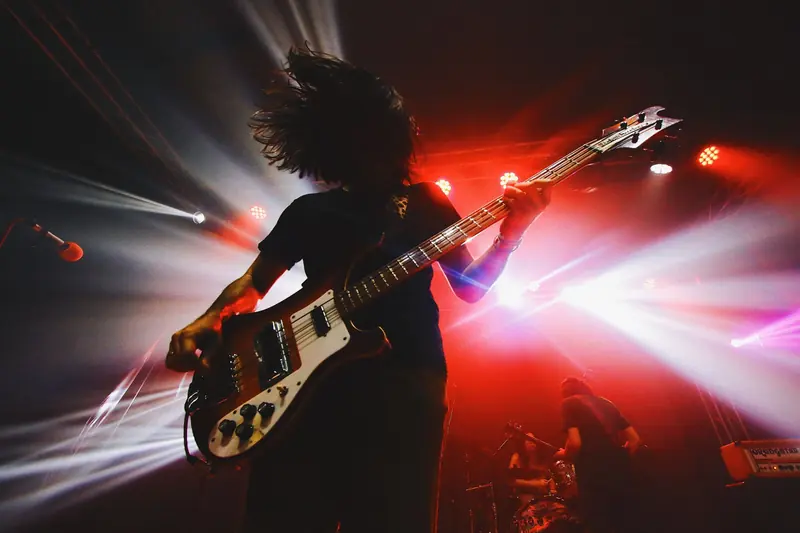
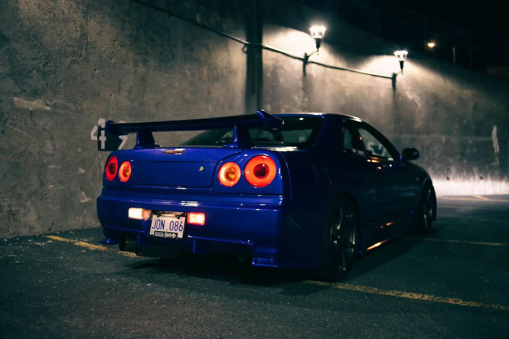
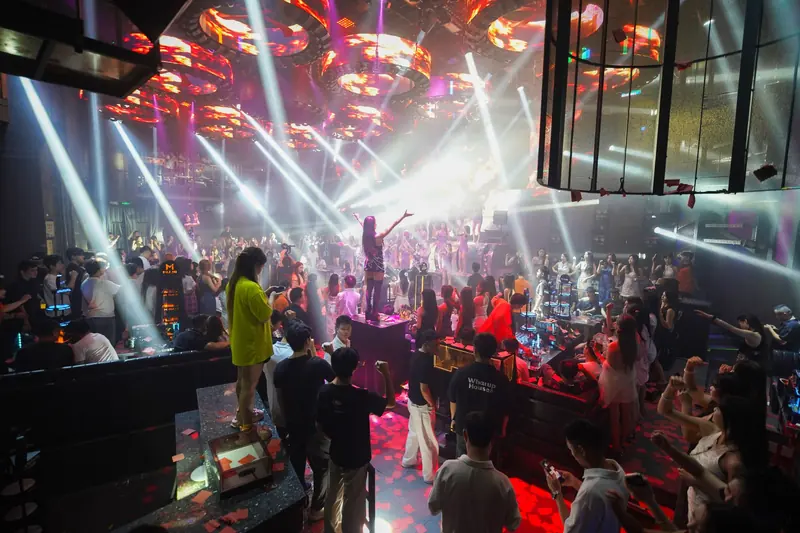
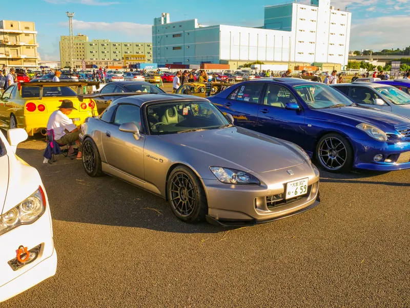

Photographer Filmmaker Rider
Jensen
Shooting the hours after five: bikes at speed, bodies in motion, loud rooms and the people who fill them.
17:00Clock out
Nine-to-five pays the bills. Five-to-nine is where the good stuff happens.

I'm Jensen. I make photographs and films about the things that keep me up at night: motorbikes, cars, music, movement, and the crews built around them.
Most evenings I'm out on the bike hunting for light, on a dance floor, or on stage with my band. Everything I shoot comes out of that life, which is probably why it never sits still.
- Shoots
- Photo, film, edit
- Off the clock
- Riding, dance, band
- Founder
- After Work Haus
17:45Off the clock
Four lives, one lens
-
01
Rider
The bike is how I scout. Half my locations were found waiting at a red light after midnight. The other half came from getting lost on purpose.
-
02
Shooter
Stills and motion, one eye. I shoot the way I ride: commit to the line, trust the light, don't brake in the corner.
-
03
Dancer
Dance taught me timing. I read a room like choreography: where the beat drops, and where the moment is about to land.

-
04
Bandmate
Stage lights, sweat and feedback. Playing live is why I know exactly where to stand when the drummer counts in.

18:30Stills
Stills (12)
19:15Motion
Motion
Films, edits and reels, cut to the beat. Years of dancing to it help.
Featured film · Moto
Two wheels, one take
20:00The Haus
A media agency by Jensen
AfterWorkHaus
Our 5–9 after the 9–5.
After Work Haus is the agency I started for everything that happens off the clock. We make content for the brands, events and communities that come alive after hours, from first idea to final post.
What the Haus does
- 01Lifestyle Brand stories shot where people actually live: streets, garages, dance floors. Enquire about lifestyle
- 02Sports Moto, motorsport and action coverage from a crew that knows the racing line. Enquire about sports
- 03Media Photo, film and edits built for feeds, screens and the big wall. Enquire about media
- 04Marketing Campaigns, content calendars and launches that meet your audience after hours. Enquire about marketing
- 05Events Meets, parties and gigs, covered live, cut fast and posted before the night is over. Enquire about events



- 01
Brief
We talk it through, ideally after work, and lock the idea, the date and the deliverables.
- 02
Shoot
Photo and video on the same day with one crew, so nothing gets lost between teams.
- 03
Cut
Edited to the beat, graded to feel like the night felt, and sized for every platform.
- 04
Drop
Delivered, scheduled and pushed out while people are still talking about it.
20:59Last call
Got something that moves?
Shoots, films, events, brand work, or just a ride out. Tell me what you're making and when the lights go down.